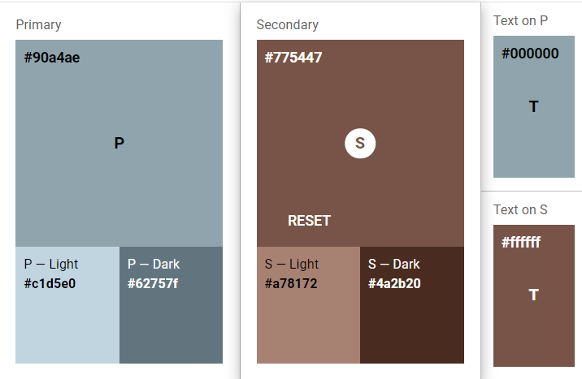

Tema 1. Planificación de interfaces gráficas
Documentaciones:
Documentación DevTools Firefox
Documentación URL GitHub
Documentación componentes
Documentación colores
Documentación aplicación colores
1.1 Colores:
Herramientas de interés:
Material.io
Paletton
Paleta de colores

1.2 Iconos:
Documentación Iconos Material Desing
Documentación Iconos w3Schools
Práctica Uso de Iconos con fuentes descargadas localmente
Herramientas de prototipado:
Balsamiq
Volver a la página de inicio